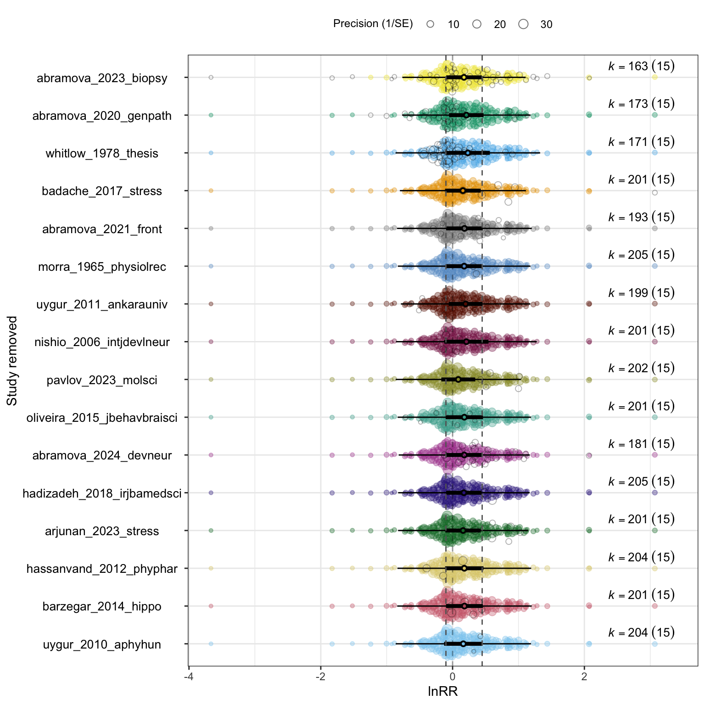

# Load the lnRR effect sizes and sampling variances.
db <- readr::read_csv(
file.path(derived_dir, "db_effect_sizes.csv"),
show_col_types = FALSE
)
# Construct the lnRR sampling variance-covariance matrix for any subset.
construct_lnRR_vcv <- function(data) {
metafor::vcalc(
vi = lnRR_var,
cluster = study_id,
grp1 = ex_id,
grp2 = con_id,
w1 = ex_n,
w2 = c_n,
obs = es_id,
rho = 0.5,
checkpd = TRUE,
data = data
)
}
# Reconstruct V and fit the intercept-only lnRR model for any subset.
fit_lnRR_model <- function(data) {
V <- construct_lnRR_vcv(data)
metafor::rma.mv(
yi = lnRR,
V = V,
random = list(
~ 1 | study_id,
~ 1 | es_id,
~ 1 | strain
),
test = "t",
method = "REML",
sparse = TRUE,
data = data
)
}
# Fit the overall model before applying any exclusions.
overall_lnRR_model <- fit_lnRR_model(db)Leave-one-out analysis
We use a leave-one-out analysis to examine whether the overall lnRR estimate depends on any single study. We remove one study at a time, reconstruct the sampling variance-covariance matrix (V), and refit the multilevel intercept-only model.
NoteVariable definitions
| Variable | Definition |
|---|---|
study_id |
Identifier for the primary research paper and the unit removed in each leave-one-out iteration. |
es_id |
Unique identifier for each effect size. |
ex_id, con_id |
Identifiers for the exposed and control groups used to construct V. |
lnRR |
Log response ratio for the difference in group means. |
lnRR_var |
Sampling variance of lnRR. |
| \(k\) | Number of effect sizes included in a model. |
Analysis data and model functions
We load the effect-size database created in the Effect size calculation. The model functions reconstruct V with the variables and working correlation used in the Sampling variance-covariance matrices. Then, we fit the random-effects structure specified in the Overall effects.
Study-level leave-one-out analysis
Each iteration removes every effect size from one study_id. Because the number and arrangement of dependent effect sizes change after each exclusion, we reconstruct V before fitting that iteration’s model.
# Fit one model for each omitted study.
study_ids <- unique(db$study_id)
loo_models <- purrr::map(
study_ids,
~ fit_lnRR_model(dplyr::filter(db, study_id != .x))
)
names(loo_models) <- study_ids
# Extract the estimate and intervals returned by each fitted model.
loo_model_results <- purrr::imap(
loo_models,
function(model, omitted_study) {
result <- orchaRd::mod_results(model, group = "study_id")
model_table <- result$mod_table
model_data <- result$data
model_table$name <- omitted_study
model_data$moderator <- omitted_study
list(mod_table = model_table, data = model_data)
}
)
# Assemble the object used by the leave-one-out orchard plot.
loo_results <- structure(
list(
mod_table = dplyr::bind_rows(
purrr::map(loo_model_results, "mod_table")
),
data = dplyr::bind_rows(
purrr::map(loo_model_results, "data")
),
orig_mod_results = orchaRd::mod_results(
overall_lnRR_model,
group = "study_id"
)
),
class = c("orchard", "data.frame")
)
# Create a compact table with one row for each omitted study.
loo_table <- loo_results$mod_table |>
dplyr::transmute(
`Study removed` = as.character(name),
k = nrow(db) - as.integer(table(db$study_id)[as.character(name)]),
`Estimate` = estimate,
`95% CI lower` = lowerCL,
`95% CI upper` = upperCL
)
loo_table |>
knitr::kable(
digits = 3,
caption = "Overall lnRR after removing each study in turn."
)| Study removed | k | Estimate | 95% CI lower | 95% CI upper |
|---|---|---|---|---|
| uygur_2010_aphyhun | 204 | 0.163 | -0.129 | 0.454 |
| barzegar_2014_hippo | 201 | 0.180 | -0.100 | 0.460 |
| hassanvand_2012_phyphar | 204 | 0.178 | -0.113 | 0.469 |
| arjunan_2023_stress | 201 | 0.159 | -0.109 | 0.427 |
| hadizadeh_2018_irjbamedsci | 205 | 0.172 | -0.097 | 0.441 |
| abramova_2024_devneur | 181 | 0.177 | -0.094 | 0.448 |
| oliveira_2015_jbehavbraisci | 201 | 0.178 | -0.105 | 0.462 |
| pavlov_2023_molsci | 202 | 0.087 | -0.171 | 0.344 |
| nishio_2006_intjdevlneur | 201 | 0.210 | -0.126 | 0.545 |
| uygur_2011_ankarauniv | 199 | 0.197 | -0.058 | 0.453 |
| morra_1965_physiolrec | 205 | 0.176 | -0.098 | 0.450 |
| abramova_2021_front | 193 | 0.180 | -0.098 | 0.458 |
| badache_2017_stress | 201 | 0.157 | -0.114 | 0.428 |
| whitlow_1978_thesis | 171 | 0.232 | -0.102 | 0.565 |
| abramova_2020_genpath | 173 | 0.209 | -0.053 | 0.470 |
| abramova_2023_biopsy | 163 | 0.173 | -0.097 | 0.443 |
The orchard plot shows the refitted overall lnRR estimate for each omitted study. The dotted reference lines show the confidence limits from the model that includes all studies (Nakagawa et al. 2023).
# Plot the model estimate obtained after each study exclusion.
loo_plot <- orchaRd::orchard_leave1out(
leave1out = loo_results,
xlab = "lnRR",
ylab = "Study removed",
ci_lines_color = "grey40",
trunk.size = 0.3,
branch.size = 1.5,
alpha = 0.35,
legend.pos = "top.out"
)
loo_plot
NoteSession information
sessionInfo()#> R version 4.5.1 (2025-06-13)
#> Platform: aarch64-apple-darwin20
#> Running under: macOS Tahoe 26.6.2
#>
#> Matrix products: default
#> BLAS: /Library/Frameworks/R.framework/Versions/4.5-arm64/Resources/lib/libRblas.0.dylib
#> LAPACK: /Library/Frameworks/R.framework/Versions/4.5-arm64/Resources/lib/libRlapack.dylib; LAPACK version 3.12.1
#>
#> locale:
#> [1] C.UTF-8/C.UTF-8/C.UTF-8/C/C.UTF-8/C.UTF-8
#>
#> time zone: America/Edmonton
#> tzcode source: internal
#>
#> attached base packages:
#> [1] stats graphics grDevices utils datasets methods base
#>
#> other attached packages:
#> [1] tibble_3.3.1 readr_2.2.0 purrr_1.2.2
#> [4] orchaRd_2.2.1 metafor_5.0-1 numDeriv_2016.8-1.1
#> [7] metadat_1.6-0 Matrix_1.7-3 knitr_1.51
#> [10] ggplot2_4.0.3 dplyr_1.2.1
#>
#> loaded via a namespace (and not attached):
#> [1] sandwich_3.1-3 generics_0.1.4 lattice_0.22-7 hms_1.1.4
#> [5] digest_0.6.39 magrittr_2.0.5 evaluate_1.0.5 grid_4.5.1
#> [9] estimability_2.0.0 RColorBrewer_1.1-3 mvtnorm_1.4-2 fastmap_1.2.0
#> [13] jsonlite_2.0.0 survival_3.8-3 multcomp_1.4-31 scales_1.4.0
#> [17] TH.data_1.1-5 codetools_0.2-20 cli_3.6.6 rlang_1.3.0
#> [21] crayon_1.5.3 splines_4.5.1 bit64_4.8.2 withr_3.0.3
#> [25] yaml_2.3.12 otel_0.2.0 ggbeeswarm_0.7.3 tools_4.5.1
#> [29] parallel_4.5.1 tzdb_0.5.0 mathjaxr_2.0-0 latex2exp_0.9.8
#> [33] pacman_0.5.1 vctrs_0.7.3 R6_2.6.1 zoo_1.9-0
#> [37] lifecycle_1.0.5 emmeans_2.0.4 htmlwidgets_1.6.4 bit_4.6.0
#> [41] vipor_0.4.7 MASS_7.3-65 vroom_1.7.1 beeswarm_0.4.0
#> [45] pkgconfig_2.0.3 pillar_1.11.1 gtable_0.3.6 glue_1.8.1
#> [49] xfun_0.60 tidyselect_1.2.1 farver_2.1.2 htmltools_0.5.9
#> [53] nlme_3.1-168 labeling_0.4.3 rmarkdown_2.31 compiler_4.5.1
#> [57] S7_0.2.2References
Nakagawa, Shinichi, Malgorzata Lagisz, Rose E. O’Dea, et al. 2023. “orchaRd 2.0: An r Package for Visualising Meta-Analyses with Orchard Plots.” Methods in Ecology and Evolution 14: 2003–10. https://doi.org/10.1111/2041-210X.14152.